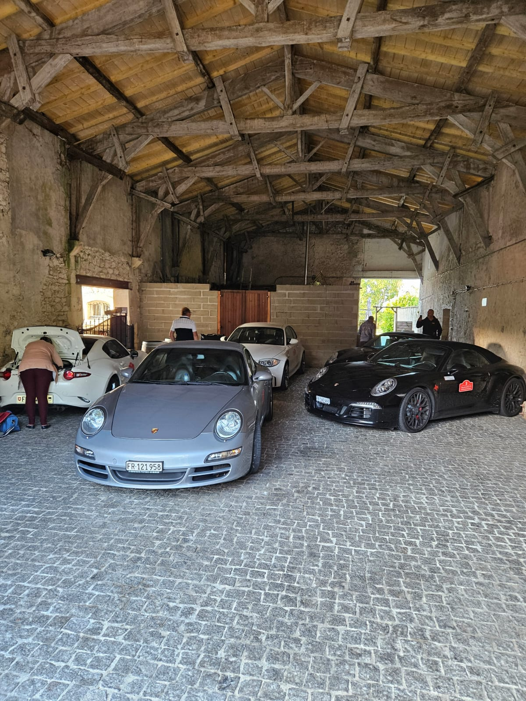
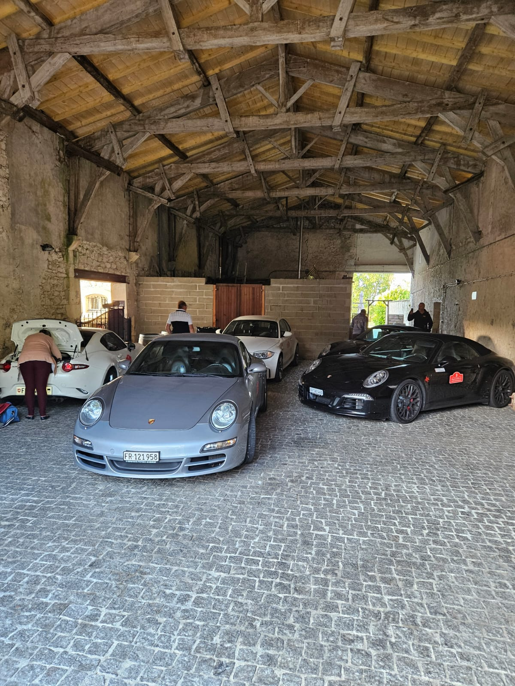

Notre Histoire
Depuis 2021, nous avons parcouru les plus belles routes d'Europe, créant des souvenirs inoubliables avec des passionnés d'automobiles. Découvrez nos aventures passées.


Tour de Sardaigne
Une semaine magique sur l'île italienne, entre mer turquoise et routes de montagne sinueuses. Nous avons découvert la Costa Smeralda, traversé les montagnes du Supramonte et longé les côtes spectaculaires. Des paysages à couper le souffle et une gastronomie exceptionnelle.
� Distance: 1,947 km
Tour des Pyrénées
À la conquête des cols mythiques des Pyrénées ! Du col du Tourmalet au col d'Aubisque, nous avons parcouru les routes empruntées par le Tour de France. Un mélange parfait de culture française et espagnole, avec des passages inoubliables en haute montagne. Visite de domaines à Bordeaux (Haut-Bailly et Phélan Ségur) avant la rentrée en Suisse.
🚗 Participants: 5 véhicules


 



Tour de Corse
L'île de Beauté porte bien son nom ! Notre périple nous a menés de Bastia à Bonifacio, en passant par les Calanques de Piana et le désert des Agriates. Des routes sinueuses mythiques et des panoramas époustouflants sur la Méditerranée.
🚗 Participants: 4 véhicules
Tour de la Toscane
Édition Mille Miglia
Un voyage d'exception sur les traces de la légendaire Mille Miglia. Florence, Sienne, les collines du Chianti... Nous avons roulé sur les routes mythiques de cette course historique, tout en découvrant le patrimoine exceptionnel de la Toscane.
🚗 Participants: 4 véhicules


Tour de Suisse
Notre Premier Roadtrip
Tout a commencé ici ! Notre premier roadtrip organisé nous a menés à travers les Alpes suisses, du lac Léman au Tessin. Des cols alpins spectaculaires, des villages pittoresques et une organisation qui a posé les bases de nos futures aventures.
🚗 Participants: 2 véhicules
Ils ont vécu l'expérience
"Une expérience inoubliable ! L'organisation était parfaite, les routes magnifiques et l'ambiance exceptionnelle. J'ai hâte de repartir avec GT Switzerland !"
— D. Schafer, participants à tous les tours organisés"Les cols des Pyrénées étaient spectaculaires. Tout était prévu dans les moindres détails. Un vrai plaisir de conduite dans un cadre magnifique."
— A. Clerc, Tour des Pyrénées 2024"La Corse vue sous cet angle est tout simplement magique. Les routes, les paysages, l'hébergement... tout était au top. Merci pour ces souvenirs !"
— R. Nicolli, Tour de Corse 2023Envie de créer vos propres souvenirs ?
Rejoignez-nous pour notre prochain roadtrip en 2026 !
Réserver votre place